Kubernetes
Table of Contents
2 Vagrant Lab
https://blog.exxactcorp.com/building-a-kubernetes-cluster-using-vagrant/
git clone https://exxsyseng@bitbucket.org/exxsyseng/k8s_centos.git # Centos k8s Cluster git clone https://exxsyseng@bitbucket.org/exxsyseng/k8s_ubuntu.git # Ubuntu k8s Cluster
3 Course Overview
3.1 Course Introduction
fundamental parts of kubernetes
- going to install kubernetes for a lab
- going to work with pods
- going to do some deployments
4 Course Introduction
4.1 Course intro
5 What Is Kubernetes?
5.1 Kubernetes: Where It Came From
- written in go/golang
- came from google
- borg
- omega
- kubernetes
- omega
Kubernetes = K8s
5.2 Kubernetes: What and Why
Containers
- Challenges they bring
- brings new scalability challenges
- application developers do not care about cpu is running their code
- Pets vs Cattle
- kubernetes, I got this app and it consists of these containers
- kubernetes take care of all the hard work and logistics
- kubernetes, I got this app and it consists of these containers
- what is it made up of?
- standard package format
- manifest
- very platform agnostic
- as long as you can install the agent, it wil work
- lets you target deployments
- it makes decisions about to where to run it
- Kubernetes is moving very fast
- get your hands dirty and keep playing with it
6 Kubernetes Architecture
6.1 Module Intro
Big picture view
- masters
- nodes
- pods[[
- Services
- networking
- deployments
6.2 Big Picture View
Kubernetes is just an orchestrator for microservice apps

package up your application and give it to the cluster

- Masters
- master control plane
- Nodes
- do the actual work
- report back to master about the changes that are happening
- package the application it up in what is called a deployment
- manifest file tells cluster what configuration settings it has
6.3 Masters
platform agnostic

- all it wants is linux
- linux does not care if it running on bare metal,openstack, cloud
kube-apiserver
- front-end to the control plane
- exposes the API (REST)
- Consumes JSON via manfiest files
- declare the state of our app for. record of intent
- Cluster Store
- persistent storage
- cluster state and con fig
- uses etcd
- source of truth for the cluster
- kube controller-manager
- controller of controllers
- node controller
- endpoints controller
- namespace controller
- watches for changes
- helps maintain desired state
- current state = desired state
- kuber-scheduler
- watches apiserver for new pods
- assigns work to nodes

- issuing commands to the master
- master = api server
- that is where you are actually issuing commands
- master = api server
- kubectl talks to the apiserver (master) via json files
- works gets passed to nodes from the scheduler

6.4 Nodes
- kubelet
- kubelet is the main kubernetes agent on the node (pretty much is the node)
- talks to containers
- registers node with cluster
- watches apiserver
- instantiates pods
- then it reports back the state back to the master
- kubelet itself does not do anything if something goes wrong, just reports it
- a pod is just a bunch of containers packaged together as a single unit
- because it is interacting with a container
- kubelet needs to interact container runtime
- container runtime examples (pluggable) does not matter which
- docker
- rkt
- container runtime examples (pluggable) does not matter which
- kubelet is the main kubernetes agent on the node (pretty much is the node)
- kube proxy
- network brains of the node
- makes sure every pod gets it’s ip
- ip per pod
- if you want to interface with each container in the pod, you will need to interface with a port
- proxy is also load balances across all pods in a service
- bunch of web servers talk to a backend
- a service will load balance the traffic from a web server pod to a backend pod

wrapup
- kubelet
- container engine
- kube-proxy
6.5 Desired State and the Declarative Model
- kubernetes operates on declarative model
- YAML or JSON is contains the desired state
- they are manifest files that describe a record of intent
- YAML or JSON is contains the desired state
- it’s up to kubernetes to get it there at that point
- pulling images
- building networks
- starting containers

- example of desired state of a cluster
- kubernetes control plane runs through reconciliation loops that constantly check if desired state = actual state
- 3 nodes, one pod is running on each of those nodes:

- node goes down

6.6 Pods
- vmware runs vms
- docker runs containers
- kubernetes runs pods
- cannot run a container directly on kubernetes
- needs to be running on a pod
- typically one container running on a pod but in more advanced configuration you can have more than one container running on a pod
- what actually is a pod
- ring-fenced environment

- if the use case for containers are tightly coupled and need access to the same resources
- stick them in the same pod

- if the use case can be loosely coupled, stick them in separate pods in couple them over the networks

- the unit of scaling in kube is the pod
- you want to scale an app? you would add/remove pods
- you don’t scale by adding more containers to an existing pod
- add/remove pod replicas

- example of a multi-container pod
- two or more complimentary containers
- web server and log scraper tailing logs off somewhere else


- web server = main
- log scraper = sidecar
- two or more complimentary containers
- pods are atomic
- it is either not there or there
- no state that it is in the process of coming up
- pod is not declared available until the whole pod is up and running
- you cannot have a single pod spread over multiple nodes
- pods’s life cycle
- they are born, live and die. you don’t bring one back to life

- this is consistent with pet vs cattle. when pods die, a totally new one can pop up in it’s place and replace it
- pod deployments
- replace replication controllers
- it is either not there or there
6.7 Services
- pods die and come back up somewhere else in the cluster (on a different node possibly)
- example of how IP address churn is addressed
- say pods running apps need access to pods running databases
- ips changing constantly. lose and gain when you scale
- this is where services come to play
- provides a single dns name and IP here so that the pods IP have nothing to do with it

- if a pod dies and replaces itself, service updates and knows about it
- example of this happening is when the pods are being updated to a new version, can auto scale from 2 to 4 and back to two as easy as that
- labels
- labeled BE pods with relevant information, the labels tie the pod to the service

- when we are updating can remove the tag on the service that makes it exclusive to servicing one version

- load balancing across them all until we are ready to be fully on the new version

- services only send traffic to healthy pods
- can configure the service to point to things outside the cluster
6.8 Deployments
- our infrastructure = masters and nodes

- pods are running on the nodes
- deployments = declarativeness
- declare through the manfiest yml or json files
- self documenting, versioned, spec-once deploy many
- makes for much simpler rollbacks and rolling updates
- the declaration is deployed by kube via the apiserver
- rolling updates
- can run multiple concurrent versions
- blue-green deployments
- canary releases
6.9 Bringing It Home
- just give us linux, we’ll give you kubernetes
- master node setup
- master (control plane
- apiserver
- cluster store
- api server talks to it
- node/minion
- where the work happens
- kubelet
- container engine
- kube-proxy
- example
- issue work to master via api server (instruction = manifest files)
- master decides where to run the work
- gets dished out to the worker nodes
- they report back state changes to the master
- rest objects in kubernets api
- pods
- atomic unit of scheduling
- replication controllers
- old
- deployments
- RC, rolling updates, rollbacks
- services
- stable networking
- pods
7 Installing Kubernetes
7.1 Module Intro
going to use minikube
- cerner dailyprogrammer uses kind
7.2 Minikube
7.2.1 mac
brew install kubectl kubectl --version
brew cask install minikube
7.2.2 windows
go straight to here:
Please click for: Vagrantfile Please click for: docker.sh Please click for: minikube.sh Please click for: kubectl.sh
vagrant up
http://127.0.0.1:8001/api/v1/namespaces/kube-system/services/http:kubernetes-dashboard:/proxy/
7.3 Google Container Engine
n/a
7.4 Installing in AWS with kops
n/a
7.5 Installing Manually with kubeadm
n/a
7.6 Module Summary
- smallest unit of scheduling is a pod (atomic)
- pod manfests (yaml or JSON)
- deployed via other objects
- replication controllers etc
- replication controllers
- implement desired state
8 Working with Pods
8.1 Pod Theory
- VM = Container in the docker world
- kubernetes = pods are the atomic unit of scheduling
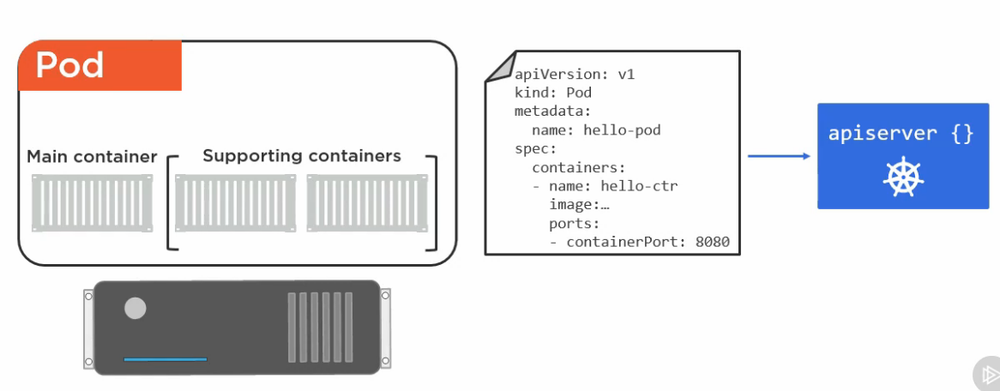
- deploy a pod to a cluster by giving it a manifest file
- api server deploys it to a node
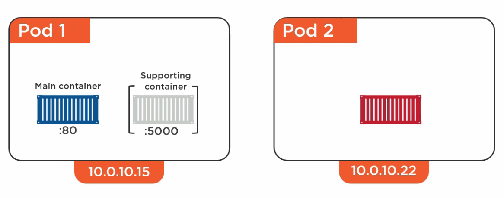
- pod gets one IP
- one IP for each pod
- access each container by the port
- each ip is it’s own network namespace
- each container needs to be accessed on it’s own port. two containers cannot share the same port

- interpod communication
- every pod talk to every other pod
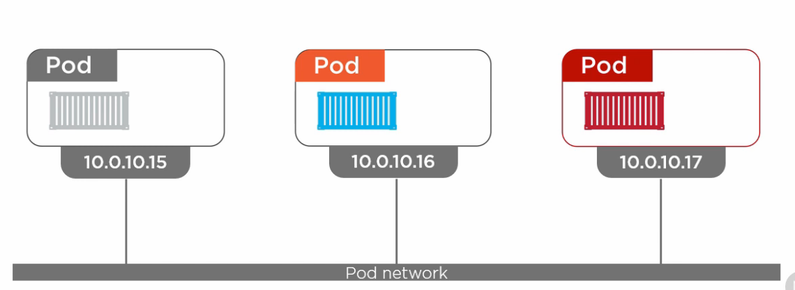
- intra-pod communication (within the pod)
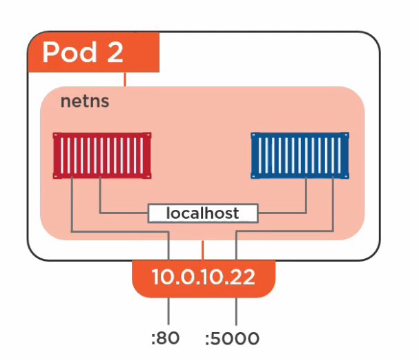
- no such thing as a half deployed
- pod cannot be parcially up
- one pod : one node
- cannot have a pod on two nodes
- you can more than oen container on one pod though
- scheduled on nodes (monions)
- pod lifecycle
- manifest -> api server
- pod pending state
- pod -> running state
- pod either succeeds
- pod failed
- pod -> running state
- pod pending state
- manifest -> api server
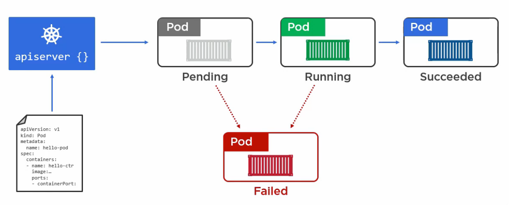
8.2 Deploying Your First Pod
apiVersion: v1
kind: Pod
metadata:
name: hello-pod
spec:
containers:
- name: hello-ctr
image: nigelpoulton/pluralsight-docker-cilatest
ports:
- containerPort: 8080
- setting the api version
- setting what kind of object to deploy
- setting the name of the pod
- spec is setting what is in the resource
- naming the image and specifying the imae
- if it is going to be a multi-container pod would just set more up down below this section
vagrant@ubuntu-xenial:~$ kubectl create -f pod.yml pod/hello-pod created vagrant@ubuntu-xenial:~$ kubectl get pods NAME READY STATUS RESTARTS AGE hello-pod 0/1 ContainerCreating 0 2s vagrant@ubuntu-xenial:~$ kubectl get pods NAME READY STATUS RESTARTS AGE hello-pod 1/1 Running 0 25s
kubectl get pods/hello-pod
kubetl get pods --all-namespaces
- we do not typicall manage pods like this though
- assume you wanted 5 instances of a pod, and wanted the desired state to be that way
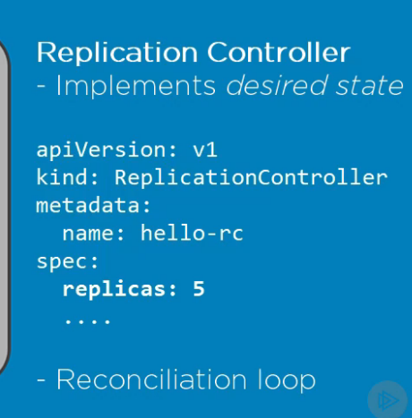
- kubernetes makes sure it always stays that way
8.3 Deploying Pods via Replication Controllers
apiVersion: v1
kind: ReplicationController
metadata:
name: hello-rc
spec:
replicas: 10
selector:
app: hello-world
template:
metadata:
labers:
app: hello-world
containers:
- name:
image: nigelpoulton/pluralsight-docker-ci:latest
ports:
- containerPort: 8080
kubectl create -f rc.yml
<change rc.yml> vagrant@ubuntu-xenial:~$ kubectl apply -f rc.yml Warning: kubectl apply should be used on resource created by either kubectl create --save-config or kubectl apply replicationcontroller/hello-rc configured
vagrant@ubuntu-xenial:~$ kubectl get pods NAME READY STATUS RESTARTS AGE hello-rc-2tqmt 1/1 Running 0 5m36s hello-rc-54q76 1/1 Running 0 5m36s hello-rc-7bpdg 1/1 Running 0 5m36s hello-rc-7kk4c 1/1 Running 0 7m28s hello-rc-8kmkc 1/1 Running 0 5m36s hello-rc-cj99d 1/1 Running 0 7m28s hello-rc-fbffc 1/1 Running 0 7m28s hello-rc-jbjlz 1/1 Running 0 5m36s hello-rc-jnxc5 1/1 Running 0 5m36s hello-rc-k59v6 1/1 Running 0 7m28s hello-rc-k5grr 1/1 Running 0 7m28s hello-rc-l4nst 1/1 Running 0 7m28s hello-rc-mlsrl 1/1 Running 0 5m36s hello-rc-pf9s8 1/1 Running 0 5m36s hello-rc-qd5zp 1/1 Running 0 7m28s hello-rc-rb262 1/1 Running 0 5m36s hello-rc-rhfhv 1/1 Running 0 7m28s hello-rc-vzvzr 1/1 Running 0 7m28s hello-rc-x72kl 1/1 Running 0 5m36s hello-rc-zksnl 1/1 Running 0 7m28s
8.4 Module Summary
- theory of services
- create a service the iterative way
- create a serice the decalairtive way
- real-world application
- recap
8.5 Kubernetes Services
- services are rest objects in the K8s API
- services are an abstraction
- services = reliable
- pods are not
- we have no solid way of connecting to the pods right now
- 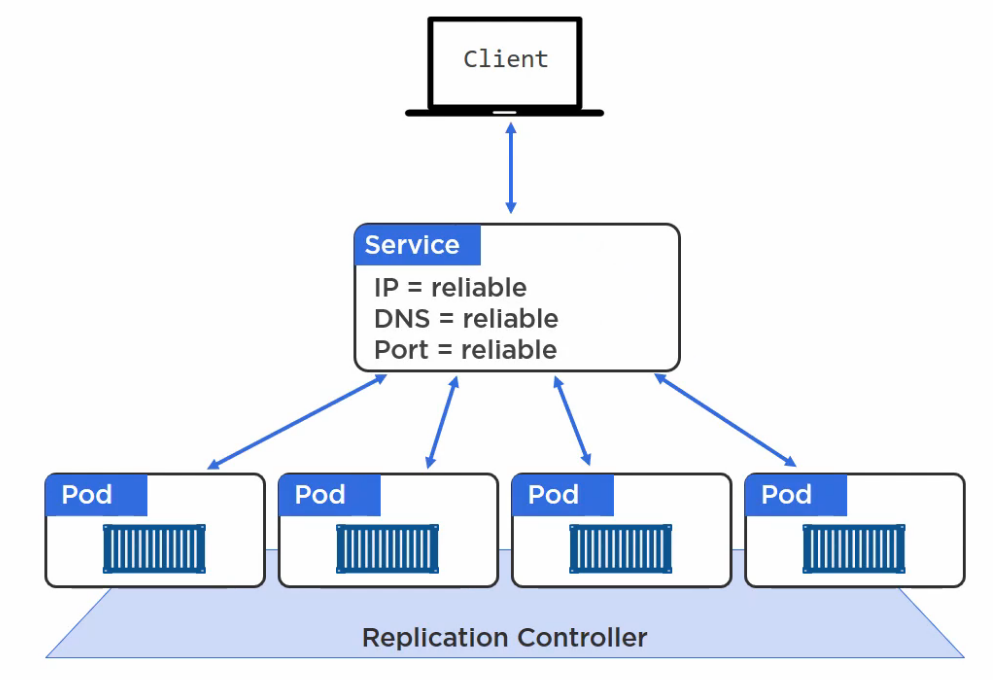
- service gets it’s own IP in the middle that never changes
- no matter what is changing on the replication controller, the service accomodates it
- 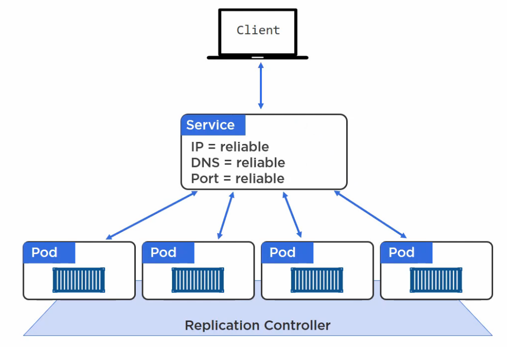
- you can hit any of the nodes in the cluster on the port that the container is running on:
- 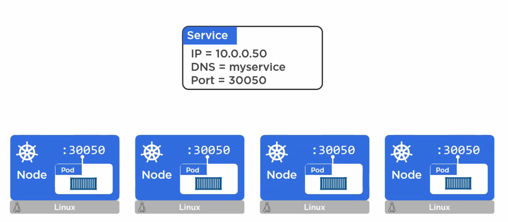
- whatever comes in or leaves, the service keeps an endpoint directory
- labels
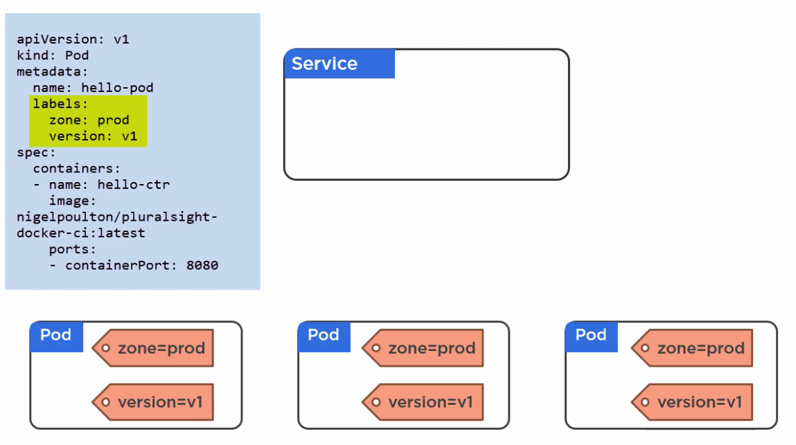
- tell the service to look at the label of the pods
- version label specifically
- service discovery
- DNS based (best)
- makes sure kubeletes (nodes) can be found
- DNS based (best)
8.6 The Theory
8.7 Creating a Service the Iterative Way
- going to create a service
vagrant@ubuntu-xenial:~$ kubectl expose rc hello-rc --name=hello-svc --target-port=8080 --type=NodePort service/hello-svc exposed vagrant@ubuntu-xenial:~$ kubectl describe svc hello-svc Name: hello-svc Namespace: default Labels: app=hello-world Annotations: <none> Selector: app=hello-world Type: NodePort IP: 10.102.123.13 Port: <unset> 8080/TCP TargetPort: 8080/TCP NodePort: <unset> 31894/TCP Endpoints: 172.17.0.10:8080,172.17.0.11:8080,172.17.0.12:8080 + 17 more... Session Affinity: None External Traffic Policy: Cluster Events: <none>
8.8 Creating a Service the Declarative Way
8.9 In the Real World
8.10 Summary
9 Kubernetes Deployments
9.1 Module Intro
9.2 Deployment Theory
9.3 Creating Your First Kubernetes Deployment
9.4 Updating a Deployment
9.5 Module Summary
10 What Next?
10.1 What Next?
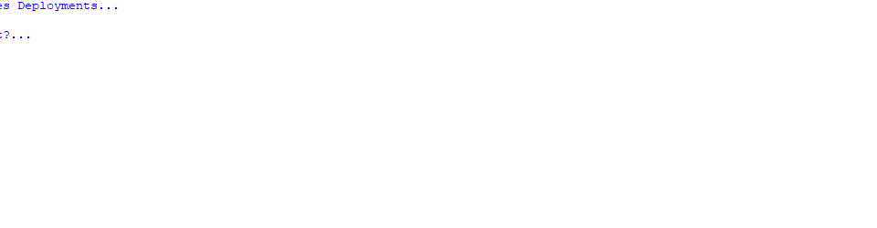